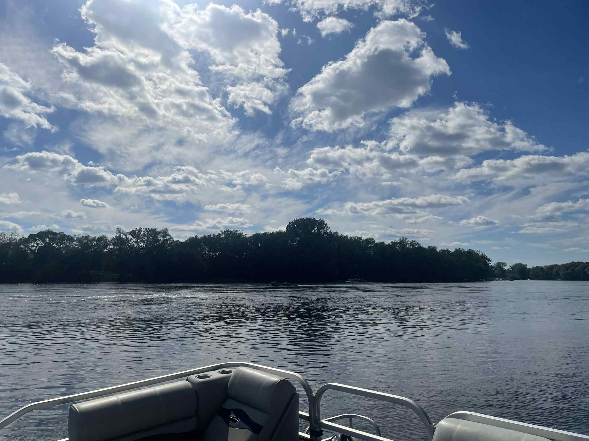
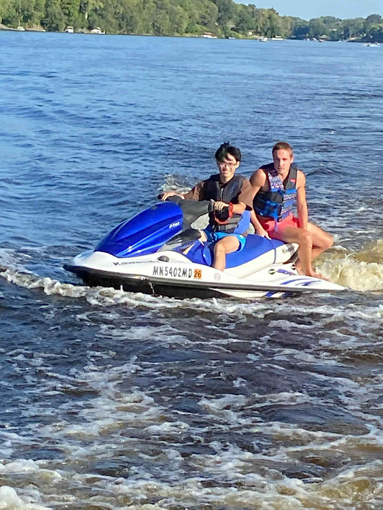
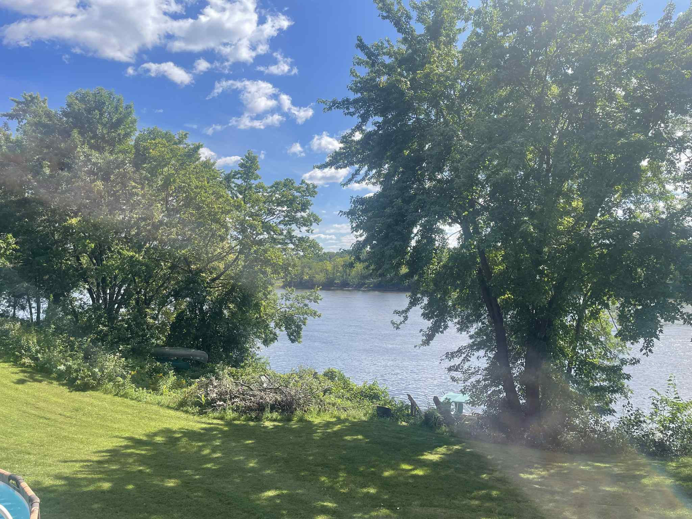

My first year at a foreign country, stayed far away from my family, girlfriend, friends, and all memorable things, has come to the end. Now, at the time I wrote this blog, I'm sitting at my desk and typing each line for you to know more about my person.
Introduction
My name is Pham Nhat Minh, a 19-year-old teenager who loves coding and playing football, and I am Vietnamese. Everything was so fast. I remember that last year, I said "Goodbye" to my parents, sibling, and cousins to go study abroad at Ha Noi International Airport, then about 2 months ago, I came back to my country. That is damn fast. Time just flies but I don't know what I have done until now.
At school
The first two weeks I arrived at UMN, I had to stay at Centennial Hall, which was great as I could stay alone and cost me up to $480, and went out to eat day by day. I hung out with my friends to wander around school, looking at the place where I will spend the next 4 years here.
The campus was massive compared to what I was used to back home. Walking from one building to another felt like a mini journey, especially during the harsh Minnesota winters. I remember my first snow day - I was so excited that I spent hours outside, even though my Vietnamese blood wasn't quite prepared for the freezing temperatures!
Classes and Academics
My first semester was challenging but exciting. I took courses in computer science, mathematics, and some general education requirements. The professors were knowledgeable and approachable, though the pace of learning was much faster than I anticipated. Office hours became my best friend, and I spent countless evenings in the library trying to understand complex algorithms and data structures.
Making Friends
One of my biggest concerns was making friends in a completely new environment. Luckily, I found a great community through the Vietnamese International Student Association and the computer science study groups. We often gathered at Coffman Union to study together and share our experiences of adjusting to life in the US.
At the Dorm
My first American friend was Conor Bakken, a student from Minneapolis. We met just a few days after I arrived, and he kindly drove me around the city. As we passed by McDonald's, Wingstop, and other places I'd only seen on TV, I realized how far I had come from my familiar world.
We talked about our lives before college — Conor used to work as a lifeguard, while I spent my summer preparing application documents. It surprised me how independent American teenagers are. Many start working at 16 or 17, while in Asia, most students focus entirely on school.
The more we talked, the more I noticed how our backgrounds shaped our perspectives. He loved burgers and fries; I missed spicy noodles from home. But despite our differences, we shared the same excitement about college and the future.
A few days later, his family even invited me to stay at their house near Mississippi Lake. The drive there was breathtaking — rolling hills, endless forests, and finally, the shimmering lake stretching as far as I could see. I had never seen such vast, open water before.
 The beautiful Mississippi Lake - my first time seeing such vast, open waterThe canoeing experience was unforgettable. The water was crystal clear, reflecting the blue sky and surrounding trees like a mirror. As we paddled gently across the calm surface, I felt completely peaceful for the first time since leaving Vietnam. The rhythmic sound of water against the canoe, the distant calls of birds, and the gentle breeze created a perfect moment of tranquility.
 Learning to paddle - my first canoe experience on Mississippi LakeWe glided past lily pads and watched fish swim beneath us. Conor taught me the proper paddling technique, and I was amazed at how effortlessly they navigated the water. Back home in Vietnam, I had only seen lakes in movies or photos, but experiencing the real thing — the fresh air, the natural beauty, the sense of adventure — was something I'll never forget.
After canoeing, we had a family dinner with steak and pasta around their wooden dining table. The house had a cozy, vintage charm with big windows overlooking the lake. As the sun set, painting the sky in orange and pink, we talked about everything from sports to culture. It was my first time truly experiencing American family life, and it taught me how much I could learn from people with different lifestyles. The whole experience made me realize that despite our cultural differences, we all share the same appreciation for nature, family, and good company.
 The peaceful sunset scene that made me feel at home in a new countryCultural Experiences
Living in the U.S. was a constant mix of discovery and adaptation. I tried new foods — pancakes, burritos, and barbecue — but I still missed Vietnamese dishes deeply. Once, I accidentally said, "I'm so hot" in class, meaning "I feel warm," and everyone laughed. Moments like that taught me to laugh at myself and enjoy learning through mistakes.
Celebrating Thanksgiving and Halloween for the first time was amazing. Back home, we don't carve pumpkins or eat turkey, so those experiences felt special. But what surprised me most about American culture was how direct and independent people are. Students are encouraged to speak up, share opinions, and challenge ideas — something I had to get used to. It made me more confident and open-minded over time.
Personal Development
Living alone forced me to grow up fast. I learned how to budget, cook, do laundry, and manage my schedule without anyone reminding me. I'll never forget the first time I accidentally shrank my clothes in the dryer — a funny but useful lesson!
Homesickness hit hardest during Lunar New Year. I missed my family deeply, but I joined a small celebration organized by VSA and realized that even far away, we could still honor our traditions. I became more mature — less afraid of making mistakes, more comfortable asking for help, and more grateful for what I have.
Challenges and Lessons Learned
There were definitely hard days — especially during midterms — when I doubted myself. But I learned to take things one step at a time and focus on progress, not perfection. One big mistake was not asking for help early enough, but I learned that professors and advisors are always willing to support international students.
If I could give advice to future students, it would be: Don't be afraid to speak up, seek help, and connect with others. You'll be surprised how many people are willing to help you succeed.
Looking Forward
As I look ahead to my sophomore year, I want to keep improving academically and personally. My goals include joining a research lab, exploring AI and data analytics, and applying for internships next summer. I also plan to work on personal coding projects, like building a small web app for Vietnamese students abroad.
I'm excited for what's next — new classes, new friendships, and new lessons that will help me grow into the person I want to become.
Final Thoughts
Looking back, my first year at UMN was a mix of excitement, struggle, and transformation. I arrived in the U.S. unsure of what to expect, but I leave this first chapter more confident, independent, and curious than ever. Every challenge taught me something valuable — about the world, about people, and about myself.
If time could slow down, I'd relive those moments again — the first snow, late-night study sessions, shared meals with friends — because they made me who I am today.